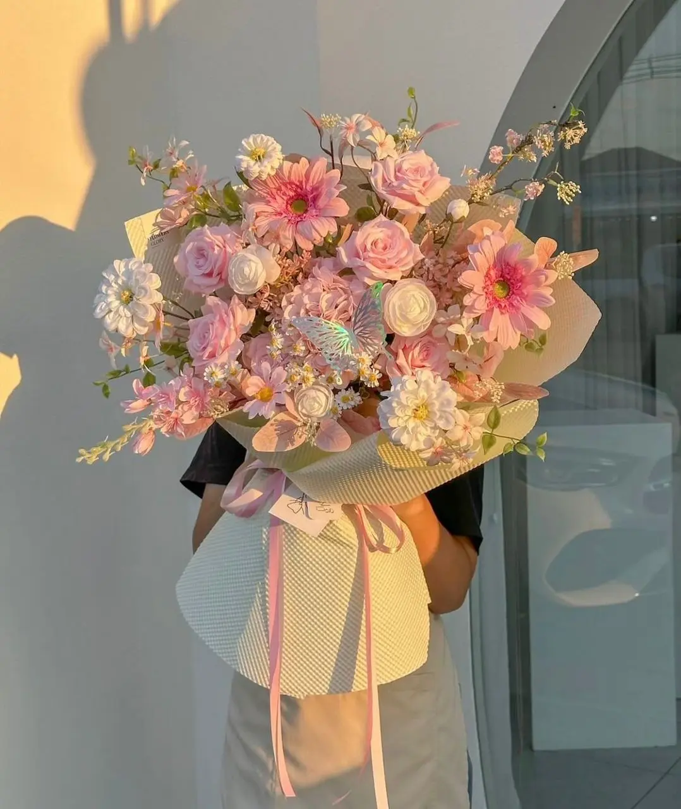

L’art floral au service de vos émotions
Des fleurs… ou rien. Parce qu’un cadeau sans fleurs, c’est comme un sourire sans joie.

Élégant et raffiné, ce bouquet de tulipes roses et blanches incarne la pureté et la tendresse des plus beaux instants. La douceur du rose se marie harmonieusement à l’éclat du blanc pour créer une composition délicate et pleine de fraîcheur. Présentées dans un papier pastel subtilement assorti, ces fleurs symbolisent l’amour sincère, la joie et le renouveau. Ce bouquet est une attention parfaite pour célébrer un anniversaire, offrir un message d’affection ou simplement illuminer le quotidien d’un être cher avec élégance et simplicité.
Laissez-vous envoûter par l’élégance de ce somptueux bouquet aux teintes douces et raffinées. Composé de roses délicatement rosées, de marguerites éclatantes et de fleurs champêtres soigneusement agencées, il dégage une aura de tendresse et de romantisme. Son harmonie de couleurs pastel, sublimée par la lumière naturelle, en fait un cadeau parfait pour exprimer l’amour, l’amitié ou la gratitude. Présenté dans un élégant papier texturé et noué d’un ruban satiné, ce bouquet est bien plus qu’une simple composition florale : c’est une véritable déclaration de douceur et de beauté.